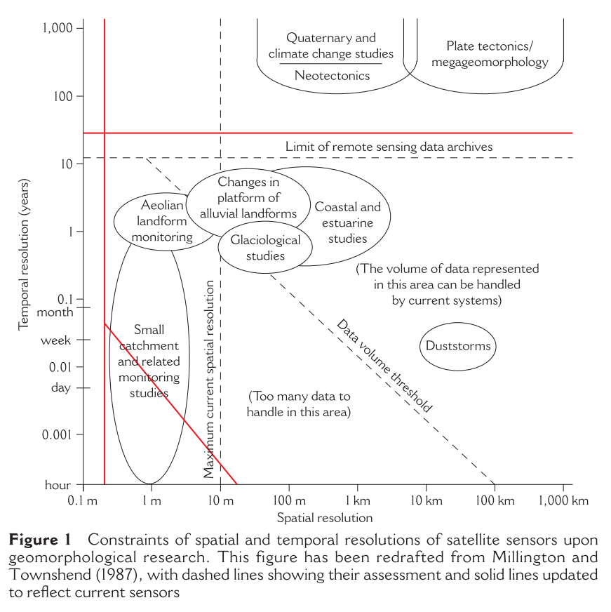
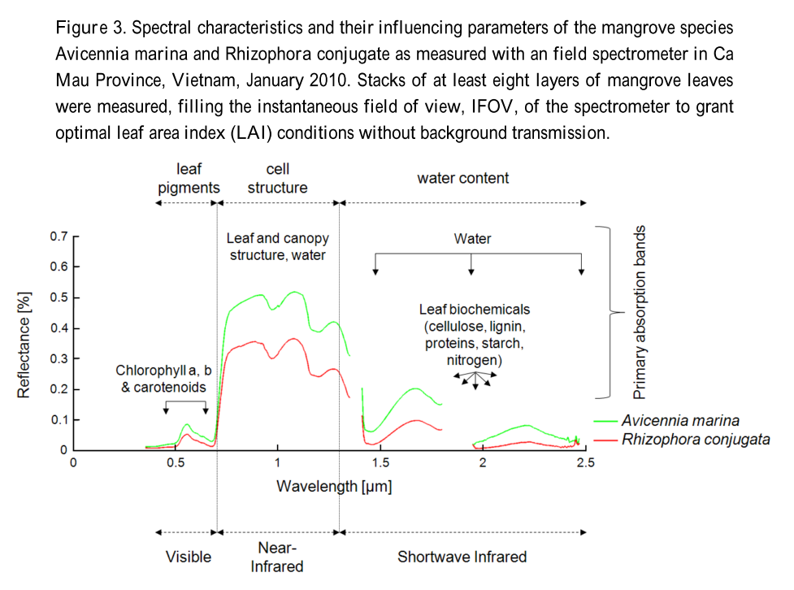

5.1 Overview
5.1.1 Smith, 2009
“Applications of remote sensing in geomorphology” (Smith and Pain 2009)
Key contribution: A review of the use of remote sensing for geomorphology, without a particular focus on mangroves. The article reviews the current platforms and data types, and maps them to their relevant uses within geomorphology.
Of particular note:
Remote sensing particularly well placed to aid studies of geomorphology in:
- location and distribution of landforms
- land surface elevation
- land surface composition
- subsurface characterization

The authors remark consistently on the added value of digital elevation models (both as products, as well as automatic classification by sensors) for geomorphology.
Among most important techniques for postprocessing of LiDAR point clouds for geomorphologists is removing “surface clutter” to extract actual ground surface.
Note:
- Look further into mangrove sites on OpenTopography
Further reading:
- Clark, 1999 - Spectroscopy of rocks and minerals, and principles of spectroscopy
- Sithole and Vosselman, 2004 - Experimental comparison of filter algorithms for bare-Earth extraction from airborne laser scanning point clouds
5.1.2 Adam, 2010
“Multispectral and hyperspectral remote sensing for identification and mapping of wetland vegetation: A review” (Adam, Mutanga, and Rugege 2010)
Key contribution: This review examines the status quo of mapping wetland vegetation using spectral (multi and hyper) imagery, with a particular focus on discriminating wetland vegetation as well as monitoring biophysical and biochemical characteristics.
Key findings:
- the spectral and spatial composition of mangrove species and vegetation assemblages has complicated use of multispectral (broadband) imagery; hyperspectral (narrowband) imagery is promising but more difficult to access
- spectral signatures of different wetland veg are often similar, and are “muddied” by spectral reflectance from soil, hydrologic regime or atmospheric conditions
- spectral signatures affected most strongly by biochemical and biophysical properties of leaves, which vary greatly across species
- discrimination of wetland species from Landsat TM or SPOT imagery has generally been insufficient due to:
- lack of fine, ecological divisions between vegetation species
- broad nature of spectral wavebands
- lack of high spectral and spatial resolution to detect subcanopy vegetation types
- ANNs and fuzzy classification techniques have shown promise in better classifying mixed species pixels
- most important biochemical and biophysical properties characterizing wetland species are:
- chlorophyll - green pigment
- biomass concentration - biophysical prop
- leaf water content
- major issue of using vegetation indices (e.g., NDVI) to estimate biomass is the saturation problem
- Mutanga and Skidmore (2004) propose one mechanism to resolve saturation problem
- building spectral libraries via hyperspectral sensors is critical for discriminating wetland species, but also needs investigation at different sites & scales as reflectance within species may vary depending on environmental conditions
Research ideas:
- Spectral imagery can be effective in monitoring plant water content, which may vary significantly across mangrove species due to differing water use efficiencies
Further reading:
5.1.3 Heumann, 2011
“Satellite remote sensing of mangrove forests: Recent advances and future opportunities” (Heumann 2011)
Key contribution: One of several reviews of mangroves and remote sensing techniques that focuses primarily (i.e., solely) on vegetation mapping.
Key findings:
- Spectral discrimination of different species not successful using multispectral (broadband) imagery (Ramsey and Jensen, 1996).
- Mixed pixels also an issue for discriminating species as well as estimating canopy structure
- Spectral saturation at high biomass values is a particular problem for mapping biomass and volumes
- Very high resolution imagery effective at reducing mixed pixels just due to smaller size
- OBIA has typically been applied to species discrimination rather than extent of mangrove mappings
- Quickbird and IKONOS sensors are most common for very high resolution imagery due to long-term archiving of data
- multispectral sensors but show improvement over Landsat TM or ETM+ due to reduced numbers of mixed pixels
- Use of spectral data only is often insufficient for discrimination of species
- Classification accuracies are greatly improved when other image properties are considered, such as texture
- Texture analaysis has been applied to species discrimination, but has not been investigated (as of 2011) for other forest characteristics
- C-band PolSAR has lowest ability to parse forest structure of SAR bands
Mangrove biomass specific findings:
- Canopy height and biomass have been shown to be strongly correlated in mangroves (e.g., Fromard et al., 1998; Smith and Whelan, 2006)
- must studies of height and biomass have employed SAR data
- different polarizations (based on wavelength) interact differently with different components of the forest
- trunks and soils may produce single or double bounce interactions
- signal may scatter within canopy
- P-band POLSAR or HV polarization of L-band SAR perform best in mapping aboveground biomass
Very-high resolution satellites:
- The IKONOS and Quickbird are most commonly used, due to archiving of data and plans for long-term consistency
- IKONOS > GeoEye-1 (successor) (multispect @ 1.65 m and panchrom @ 0.41 m)
- Quickbird > Worldview-2 (successor) (<2m multi, <0.5 m panchrom)
- note that Worldview-2 has 8 multispectral channels, including those in yellow and red edge ranges designed for veg studies
Research ideas:
- Coupling of species mapping with species-specific allometry equations for better estimates of mangrove biomass
- Might make sense in Americas where just three species exist (easier!)
5.1.4 Kuenzer, 2011
“Remote sensing of mangrove ecosystems: A review” (Kuenzer et al. 2011)
Key contribution: This is a very extensive review of remote sensing and mangroves.
Notes:
Optical imagery:
The spectral signature of mangrove leaves are largely a function of age, vitality, phenological props and physiological props. Greater discrimination between species (at least in Vietnam) may be seen in the NIR, but little differentiation seen in VIS:

Radar imagery:
- SAR imagery provides intensity values of the “backscatter coefficient”. Given different polarizations and wavelengths of SAR scanning, different interactions with mangrove landscape occur.
- The different SAR bands are as follows:
- X-band - 3 cm wavelength, effective for direct backscatter from canopy
- C-band - 6 cm, plant/soil multiple and volume scattering
- L-band - 24 cm, direct backscatter from soil & water

Sensors:
- See Table 2 in the study for an extensive list of sensors used within remote sensing of mangrove studies
- Aerial imagery is limited in that it cannot be scaled beyond immediate site/locality, but has value in that it can provide high-resolution data particularly for hard to access sites without field data.
- High spatial resolution data (IKONOS & Quickbird)
- Ultimate goal is to map mangroves at the species level
- A comparison of IKONOS and QuickBird found IKONOS (4 m) to be more effective at discriminating in species because of the higher spectral resolution. QuickBird has higher spatial resolution (1 m) but was less useful in this particular investigation (Greg’s paper).
- Hyperspectral imagery
- identifying relevant bands is a time intensive process and many bands are highly correlated
- EnMAP sensor
- satellite hyperspectral data that will provide more access to hyperspectral datasets globally
- is this online? I’m not sure yet.
Several tables are given in the paper that describe the various data sensors and platforms and their relative benefits and limitations for remote sensing of mangroves.
Needs within RS of mangroves space:
The authors call for several needs within the remote sensing of mangrove space:
- Need for homogenized classification schemes - ontologies, e.g., what is a sparse versus dense mangrove
- Need for standardized data-processing models - standardiziing preprocessing, processing and post processing such that enhanced comparability of studies is enabled
- Need for homogenized transparent accuracy assessment - self explanatory
- Need for further investigations of synergistic data use - coupling of new, novel and disparate RS datasets to investigate novel research questions
- Need for ecosystem service assessments
- Need for interdisciplinary and well-networked research teams
5.1.5 Giri, 2016
“Observation and monitoring of mangrove forests using remote sensing: Opportunities and challenges” (Giri 2016)
Key contribution: This is an introductory piece to a special issue on monitoring mangroves using RS. There are potentially interesting pieces in the special issue but most are focused on vegetation dynamics rather than geomorphology.
Giri is one of the key researchers working on mapping of mangrove forests using RS data, and offers some succint advice on steps for classifying mangrove forests:
- identify clear and concise objective
- develop classification system and legend
- satellite and secondary data acquisition
- data pre-processing
- training data collection
- image classification
- results validation
- dissemination of results
- application of classification results
*Random notes:*
- Important to be clear on consideration of purely true mangroves, or true mangroves with mangrove associates.
- Entire Landsat archive available in Amazon Web Services as well as Google Earth Engine.
Article synopses:
- Zhu et al, 2016: Look at Back Propagation ANN to map mangrove forest biomass using WorldView-2 imagery. Find that inclusion of species dummy variable for S. apetala vs K. candel highly significant in improving biomass estimation accuracy.
- Cuogo et al, 2016: Examined SAR backscattering from Radarsat-2 C-band data for correlations with forest structure and species data in Amazon. Might be interesting to look into their methods for sites in Thailand
- Jones et al, 2016: Used Giri’s data to assess changes in mangrove cover at national level for Madagascar. Produced higher accuracy maps with improved detail relative to Giri’s data. Potentially interesting for Thailand.
References
Smith, MJ, and CF Pain. 2009. “Applications of Remote Sensing in Geomorphology.” Progress in Physical Geography 33 (4): 568–82. doi:10.1177/0309133309346648.
Adam, Elhadi, Onisimo Mutanga, and Denis Rugege. 2010. “Multispectral and Hyperspectral Remote Sensing for Identification and Mapping of Wetland Vegetation: A Review.” Wetlands Ecology and Management 18 (3): 281–96. doi:10.1007/s11273-009-9169-z.
Heumann, Benjamin W. 2011. “Satellite Remote Sensing of Mangrove Forests: Recent Advances and Future Opportunities.” Progress in Physical Geography 35 (1): 87–108. doi:10.1177/0309133310385371.
Kuenzer, Claudia, Andrea Bluemel, Steffen Gebhardt, Tuan Vo Quoc, and Stefan Dech. 2011. “Remote Sensing of Mangrove Ecosystems: A Review.” Remote Sensing 3 (5): 878–928. doi:10.3390/rs3050878.
Giri, Chandra. 2016. “Observation and Monitoring of Mangrove Forests Using Remote Sensing: Opportunities and Challenges.” Remote Sensing 8. doi:10.3390/rs8090783.